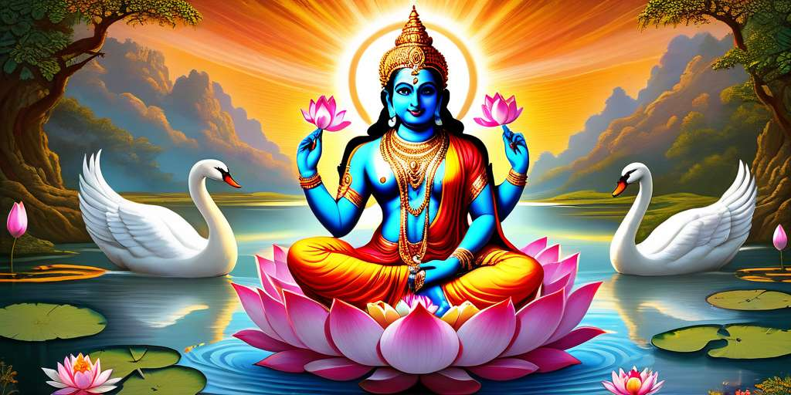
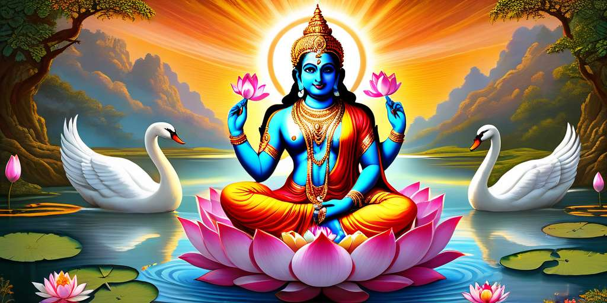

La Creación según Brahma: Un Universo de Simbolismo en la Mitología Hindú
La historia de Brahma y la creación del universo ofrece un profundo simbolismo que refleja la interconexión entre el creador, la creación y la naturaleza misma del cosmos.
¿Que trata?
al principio solo existía el Brahman, la suprema realidad cósmica, sin forma ni atributos. De este Brahman emergió Brahma, el dios creador, quien es representado con cuatro cabezas mirando en todas las direcciones, simbolizando su omnipresencia. Brahma fue encargado de crear y ordenar el universo material. Para llevar a cabo esta tarea, primero creó el agua primordial, y en su superficie descansaba un huevo cósmico. Del huevo surgió Hiranyagarbha, también conocido como el "embrión dorado", quien es otra forma del dios Brahma.
Brahma, desde su posición dentro del huevo cósmico, comenzó el proceso de la creación. A través de su pensamiento y su voluntad divina, dio forma al universo. Creó los cielos, la tierra, los océanos y todos los seres vivos que los habitaban. Uno de los aspectos más interesantes de la creación según Brahma es su forma de dar origen a los seres humanos. Se dice que Brahma creó a los seres humanos a partir de diferentes partes de su propio cuerpo. Según esta narrativa, los brahmanes (la clase sacerdotal) surgieron de su boca, los guerreros y nobles (kshatriyas) de sus brazos, los comerciantes y agricultores (vaishyas) de sus muslos, y los trabajadores manuales (shudras) de sus pies. Brahma también creó a la humanidad al dar forma a los primeros seres humanos, Manu y Shatarupa, directamente de su mente. Manu es considerado el progenitor de la humanidad, y Shatarupa fue su esposa y compañera.

Significado y Simbolismo
La historia de Brahma y la creación del universo ofrece un profundo simbolismo que refleja la interconexión entre el creador, la creación y la naturaleza misma del cosmos.
¿Que trata?
al principio solo existía el Brahman, la suprema realidad cósmica, sin forma ni atributos. De este Brahman emergió Brahma, el dios creador, quien es representado con cuatro cabezas mirando en todas las direcciones, simbolizando su omnipresencia. Brahma fue encargado de crear y ordenar el universo material. Para llevar a cabo esta tarea, primero creó el agua primordial, y en su superficie descansaba un huevo cósmico. Del huevo surgió Hiranyagarbha, también conocido como el "embrión dorado", quien es otra forma del dios Brahma.
Brahma, desde su posición dentro del huevo cósmico, comenzó el proceso de la creación. A través de su pensamiento y su voluntad divina, dio forma al universo. Creó los cielos, la tierra, los océanos y todos los seres vivos que los habitaban. Uno de los aspectos más interesantes de la creación según Brahma es su forma de dar origen a los seres humanos. Se dice que Brahma creó a los seres humanos a partir de diferentes partes de su propio cuerpo. Según esta narrativa, los brahmanes (la clase sacerdotal) surgieron de su boca, los guerreros y nobles (kshatriyas) de sus brazos, los comerciantes y agricultores (vaishyas) de sus muslos, y los trabajadores manuales (shudras) de sus pies. Brahma también creó a la humanidad al dar forma a los primeros seres humanos, Manu y Shatarupa, directamente de su mente. Manu es considerado el progenitor de la humanidad, y Shatarupa fue su esposa y compañera.

Significado y Simbolismo
- La Creación desde las Partes del Cuerpo de Brahma: Este aspecto simboliza la interconexión entre el creador y su creación. Los diferentes grupos humanos emergen de las diferentes partes del cuerpo de Brahma, lo que sugiere que todas las formas de vida están intrínsecamente ligadas al dios creador.
- El Acto de Creación por Pensamiento y Voluntad: Este simbolismo resalta la importancia del poder de la mente y la voluntad en el proceso creativo. Sugiere que la creación no es solo un acto físico, sino también un acto de la mente divina.
- Las Cuatro Cabezas de Brahma: Representan la omnisciencia y la omnipresencia del dios creador. Mirando en todas las direcciones, simbolizan su capacidad para percibir y comprender todos los aspectos del universo.